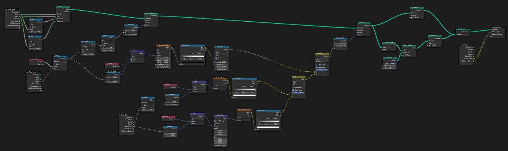
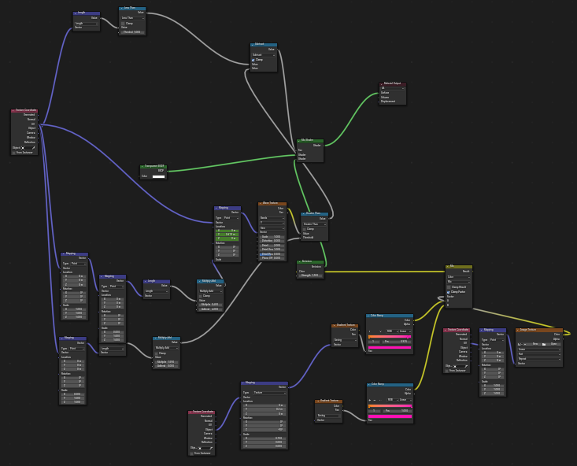
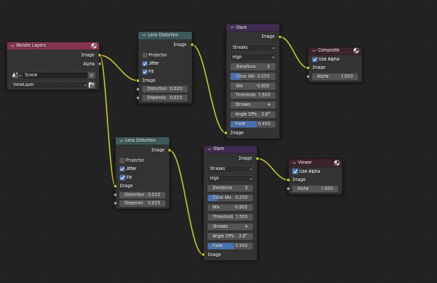

Welcome to the animation page! Here you can take a look at some of my animations. I've made animations in Adobe Animate and Blender.
Animation is something I've been fascinated by for my whole life. Since I began watching cartoons on TV and animated web series I wanted to make my own animations. Several years ago I gained access to Adobe Animate for a year and in that time I experimented with creating some basic animations. Below are some projects I made in my time with Adobe Animate before I decided that it was too expensive. I've also done a little bit of animation before using FlipaClip, but most of those have unfortunately been lost.
This is the first animation I ever finished with Adobe Animate. It's an animation of my Slug mascot bobbing back and forth to the beat of the music (which I also made by the way).
As my first animation I'm happy with how it turned out. To animate the slug I first imported an image of my original drawing then recreated it in Adobe Animate. Then I first learned how to use tweens to make the animation smooth. A tween is an object that generates inbetween frames between to keyframes, which means I don't have to painstakingly animate every single frame. I animated the twinkling stars using tweens too, with one keyframe having a bright glow and the next being dim. The music was created in Garageband for IOS. I tried making a chill beat, perfect for relaxing by the shore at night with a bright moon to fill the sky.
The animation shown below is an early one I made. It's quite simple and short, just a Furry Ball with an umbrella talking. The character in the video is actually from a Youtube series called "Mysterious Object Super Show", although I'm pretty sure it's cancelled now. Furry Ball was one of the characters and there is a scene in the first episode similar to the one I animated, which is what I based the animation on.
I created this animation mainly to learn more about Adobe Animate. I enjoyed the program a lot when I had it, although it is very expensive to keep. Here I animated the tail using tweens and easing. Easing allows me to determine how an animation starts and stops so the animation doesn't just go from one place to another, instead it goes from one place to another with natural smoothness. For example, the tail is quite bouncy, this is because I applied a bouncy easing effect. The face and arms I animated frame by frame to create the exact expression and positioning I wanted. I simply used Adobe Animate's drawing tool to draw the arms and expressions, erasing them then redrawing them each frame they changed.
The next animation is one I created to go along with a song I made. I call the song "Icefield", meant to represent a cold, desolate place far north with a huge crystalline mountain at its centre. Despite the harsh conditions, one tough cookie lives through it all, Petals the flower thing. If you've seen my 3D stuff page you would know what Petals is, but in case you don't, Petals is the blue flower thing in the video. She's one of the many characters I've concocted in my imagination.
This is the first animation in which I used an external editing software, in this case, iMovie. I don't like iMovie at all, but it's all I had at the time. I used iMovie to edit in the blizzard that occasionally kicks up along with some filters during different parts of the song to reflect the mood. For the animation itself, I animated Petals to bob from side to side in time with the beat of the song. When the scarf begins flying, the scarf rapidly switches between different images to create that strong wind effect.
This animation is a short one which I made just for fun because I was bored. At the time I made this I was really into a game called Cookie Run: Kingdom which has a whole bunch of different cookie characters in it. One of those characters is Cherry Cookie which is who I animated here. A simple animated meme, this is.
For this animation I experimented more with lighting. If you look at the outlines of the drawings you may see that as the bombs fly up and down the lighting changes to reflect the distance of the bombs from the cookie.
Nowadays I make animations using Blender, a free and open source 3D software. Making animations in 3D is very difficult and time consuming, and I have a lot of respect for those that create animations of their own. Below is one of the animations I created in Blender. If you want to see some more Blender animations, visit the 3D Stuff page on my site for some extra animations and more behind the scenes.
This animation is a looping grid pattern with mountains. In the back the sun floats with lines moving down it and a city sits in front of the sun. This animations is heavily inspired by synthwave, a genre of music which features many sounds from the 80s and a cool visual style. I made this animation as something to make the background of one of my song remixes more interesting.
To create this animation I followed many tutorials on Youtube which helped me create this awesome finished animation. The grid was made using geometry nodes which alter the geometry of objects to create various shapes and modifications. In case you don't know what nodes are, they are essentially building blocks that each contain unique data. Once nodes are connected to the final output they modify the final output based on the parameters defined in the nodes. The sun was animated using shader nodes which alter the texture and material of objects. Like Adobe Animate, Blender creates inbetween frames so you won't have to animate every frame which is very nice for creating animations that loop for a while. Below are some screenshots of the geometry and shader nodes I used to make the animation.
 This was also my first time trying out the compositing features of Blender. Compositing allows me to modify the final image of each frame with cool effects like glare and lens distortion. Below is a screenshot of my compositing.
The animations on this page are some that I am really happy about. Animating takes a lot of time and effort, but with enough practice in the future I'm sure I could create some more neat stuff. I'll continue to create the occasional animation here and there and learn a bit more about it each time.
NAVIGATION
Home 3D Stuff Animation Art Computer Programming Music PhotographySOCIALS
Youtube SoundCloud tumblr